Silence Feels Like Failure
In text chat, a user can tolerate waiting. In voice, silence is interpreted as confusion or broken hardware. The architecture must overlap stages instead of waiting for complete ASR, complete LLM output, and complete TTS.
JARVIS is an ESP32-integrated AI voice assistant with a Python orchestration server. The interesting part is the tension between human conversation and machine latency: the user expects interruption, memory, and physical action, while the system has to move audio packets, run models, call tools, and recover from failure without exposing the machinery.
Most AI assistants are evaluated like chatbots, but hardware voice agents have a different failure profile. The user speaks into a constrained embedded device. Audio must be captured, encoded, transported, transcribed, reasoned over, synthesized, streamed back, and interrupted naturally if the user talks again.
In text chat, a user can tolerate waiting. In voice, silence is interpreted as confusion or broken hardware. The architecture must overlap stages instead of waiting for complete ASR, complete LLM output, and complete TTS.
Humans interrupt. If the assistant cannot stop speaking and re-listen, it feels like a toy. Barge-in support is therefore a core state-machine problem, not a UI enhancement.
When the model can set volume, control GPIO, create reminders, or update personal records, tool execution needs explicit gates. The LLM proposes; the runtime authorizes.
| Decision | Why | Rejected Alternative | Trade-off |
|---|---|---|---|
| ESP32 firmware for device loop | Wake word, mic/speaker, display, GPIO, and power behavior need local control. | Browser/mobile-only assistant. | Embedded debugging and flashing are harder. |
| Opus audio frames | Compressed realtime audio reduces bandwidth while preserving voice quality. | Raw PCM over network. | Requires codec handling and frame timing discipline. |
| WebSocket transport | Simple bidirectional channel for JSON events and binary Opus frames. | HTTP polling / request-response audio. | Requires session lifecycle and reconnect handling. |
| MQTT+UDP option | Control and audio have different transport needs; UDP can reduce audio overhead. | Single channel for everything. | More protocol complexity and packet protection. |
| MCP / JSON-RPC tools | Tool discovery and invocation become structured instead of prompt-only side effects. | Hardcoded natural-language commands. | Requires schema discipline and error paths. |
| Layered memory | Long-term recall should be retrieved when relevant, not stuffed into every prompt. | One giant conversation history. | Requires retrieval quality and stale-memory controls. |
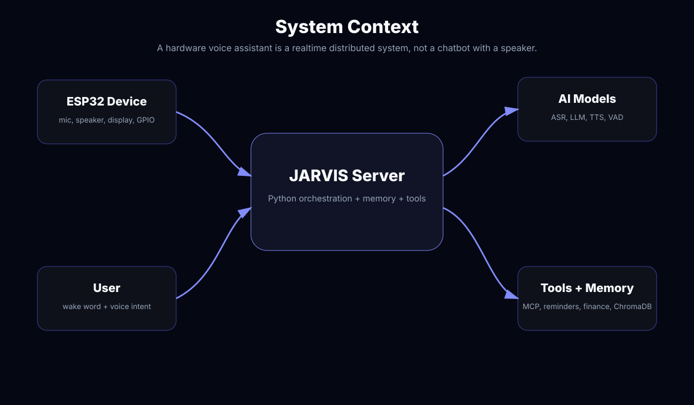
A naive implementation serializes everything: record full utterance, upload audio, wait for ASR, wait for LLM, wait for TTS, then play. That feels dead. JARVIS is framed around a latency budget where capture, transport, recognition, reasoning, and speech should stream or overlap wherever possible.
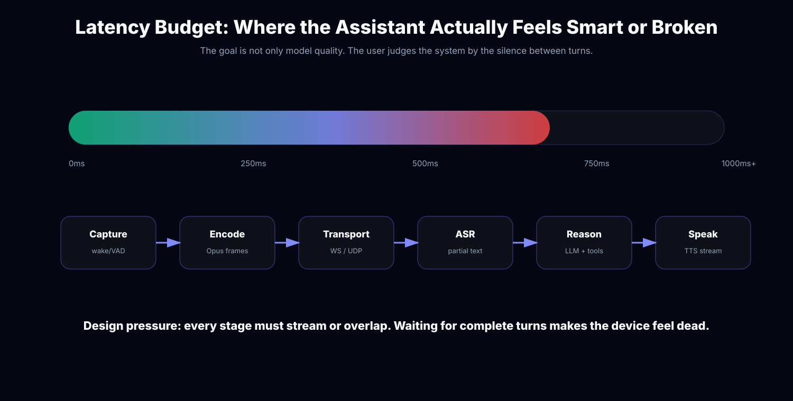
JARVIS captures speech, encodes Opus frames, streams audio to the server, runs ASR/LLM/tool orchestration, and streams TTS back. The key design choice is to treat voice as a continuous channel with state transitions, not as a sequence of isolated files.
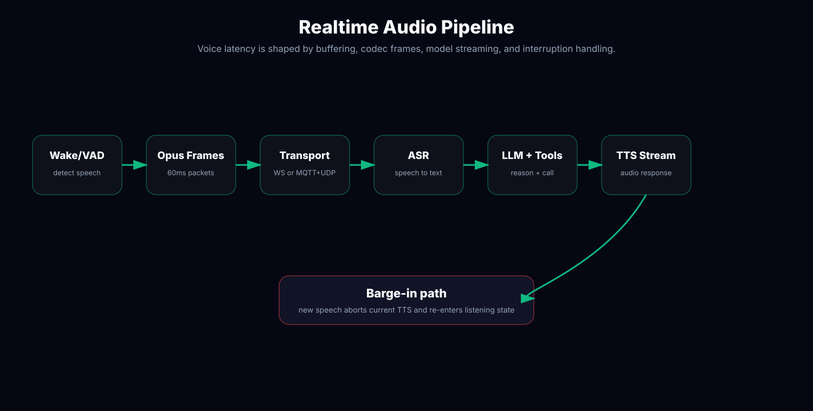
The assistant must leave Speaking state when new speech is detected, abort playback, preserve enough context to understand the interruption, and return to Listening without corrupting the session. This is why I model the conversation as states instead of scattered callbacks.
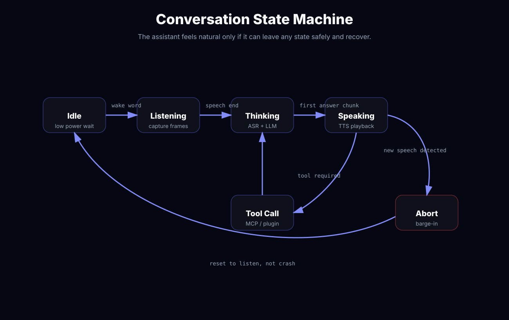
The repo supports WebSocket and MQTT+UDP. WebSocket is easier to reason about: headers identify device/client, hello negotiates transport and audio parameters, binary frames carry Opus, and JSON frames carry listen/TTS/STT/MCP/system events. MQTT+UDP separates control from low-latency encrypted audio.
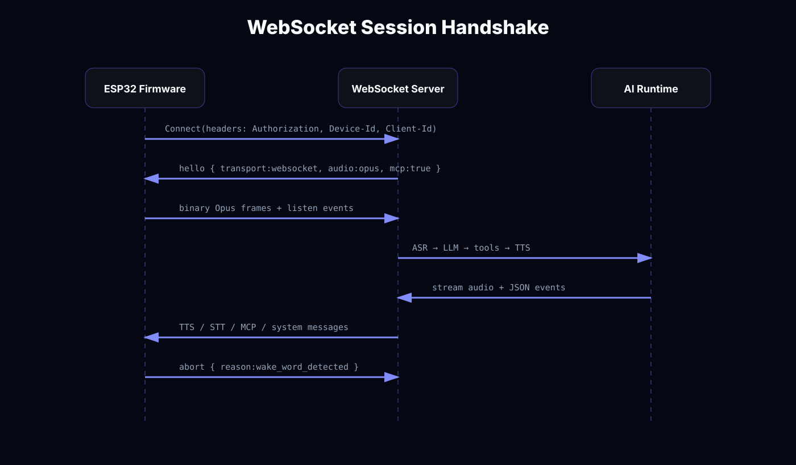
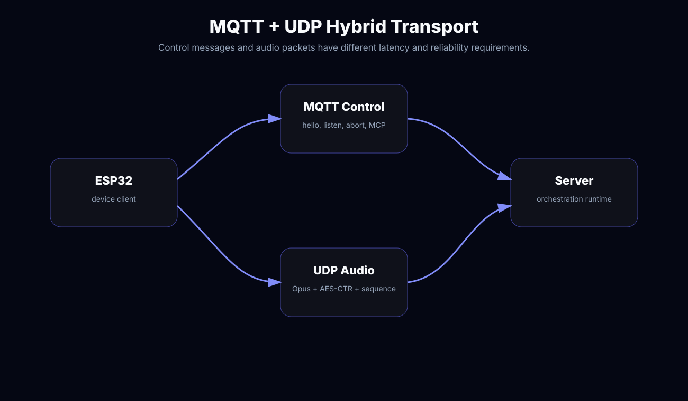
hello = { type: "hello", transport: "websocket", features: { mcp: true }, audio_params: { format: "opus", sample_rate: 16000, channels: 1, frame_duration: 60 } }
binary_frame = opus_payload
json_frame = listen | abort | stt | tts | mcp | system
MCP messages are carried inside the base transport as JSON-RPC 2.0. The server can initialize a tool session, list device tools, call a tool, and receive structured results or errors. This is safer and more maintainable than letting the model invent side effects in free text.
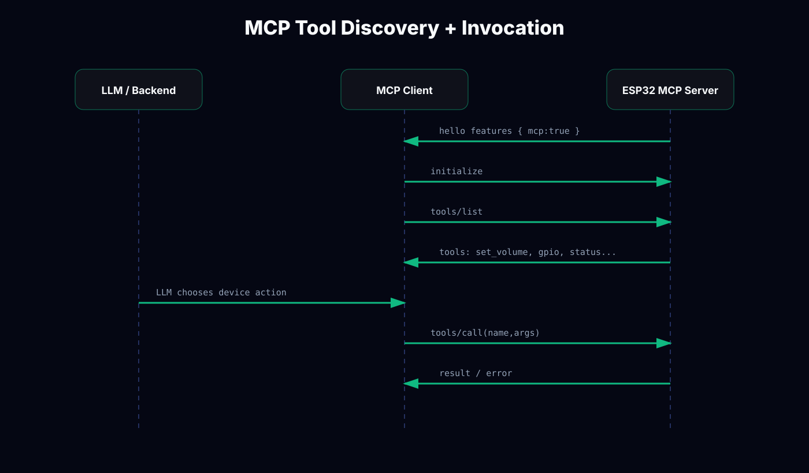
{
"session_id": "...",
"type": "mcp",
"payload": {
"jsonrpc": "2.0",
"method": "tools/call",
"params": {
"name": "self.audio_speaker.set_volume",
"arguments": { "volume": 50 }
},
"id": 3
}
}This is the difference between a demo and a system. A voice instruction like “turn it off”, “save this”, or “remind me every day” can have real side effects. The execution path therefore needs allowlists, typed schemas, risk classification, and confirmation gates.
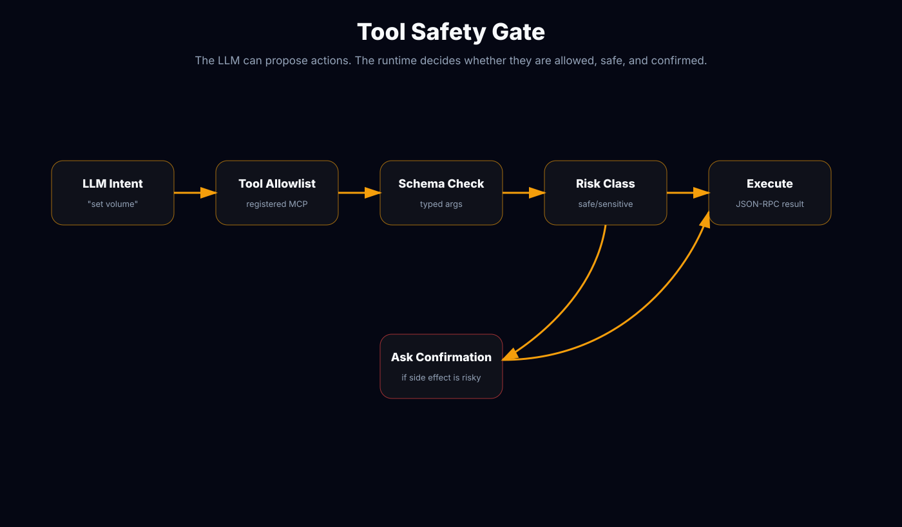
A proactive assistant needs to remember preferences, goals, reminders, health context, finance context, and prior facts. But pushing every historical detail into the prompt increases latency and degrades reasoning. Memory retrieval should be conditional, scoped, and explainable.
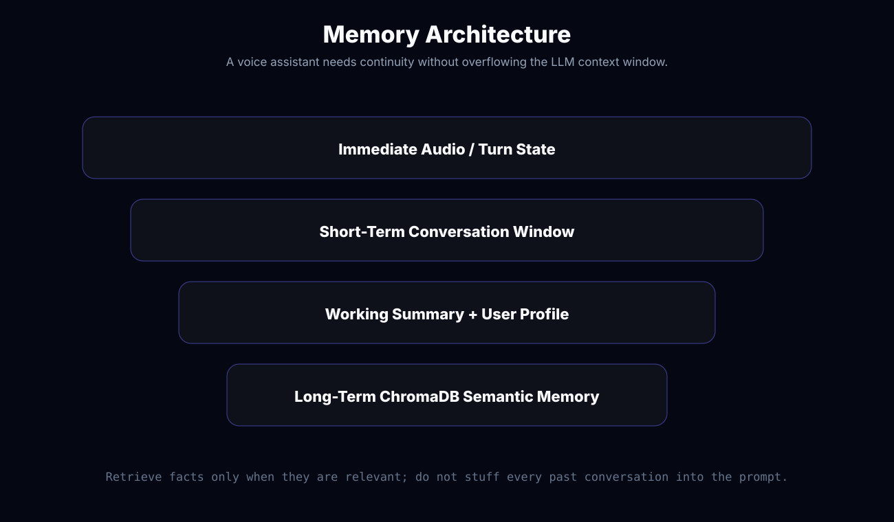
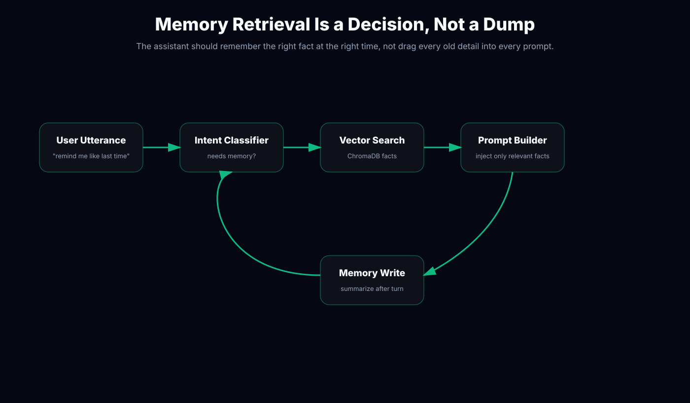
The Python server includes plugin functions for reminders, finance, health, routines, goals, todos, weather/search, memory, activity, and utility handling. This structure keeps each capability isolated and testable.
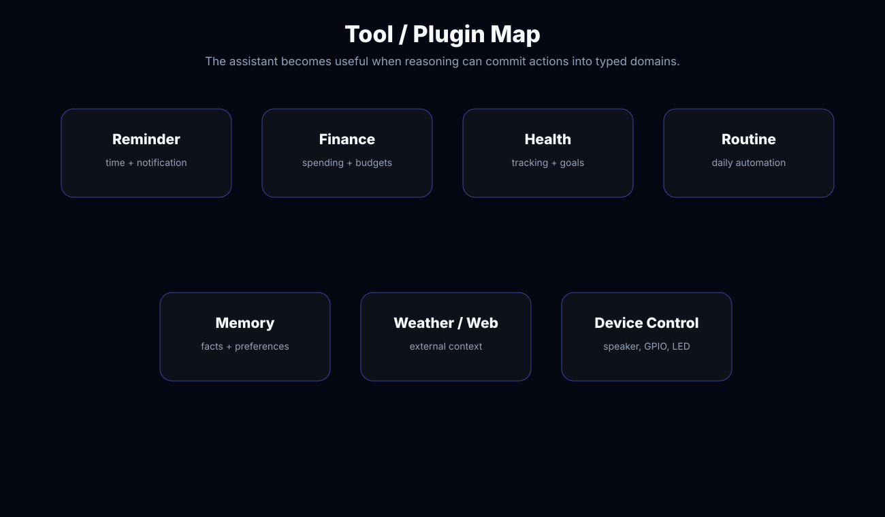
Network drops, barge-ins, tool failures, and memory drift are expected. The architecture should return to a sane state instead of trapping the user inside a broken conversation.
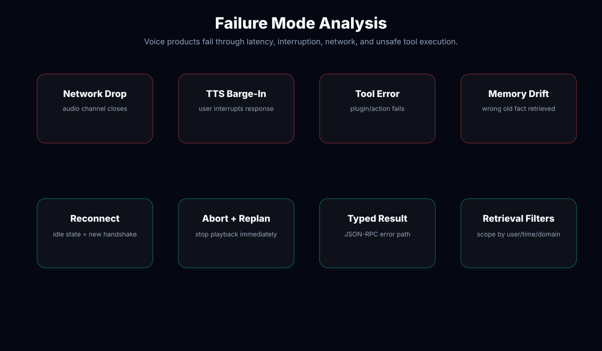
That makes security more important than in a normal chatbot. JARVIS needs device identity, transport authentication, tool allowlists, confirmation for sensitive actions, and privacy boundaries around memory retrieval.
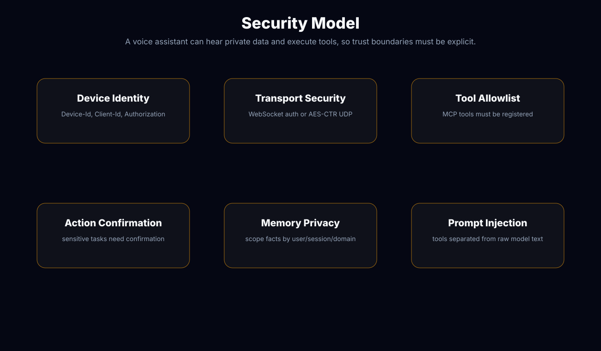
Useful metrics include wake accuracy, capture-to-first-audio latency, barge-in handling rate, tool success/error rate, memory hit usefulness, packet jitter/loss, and successful turn completion.
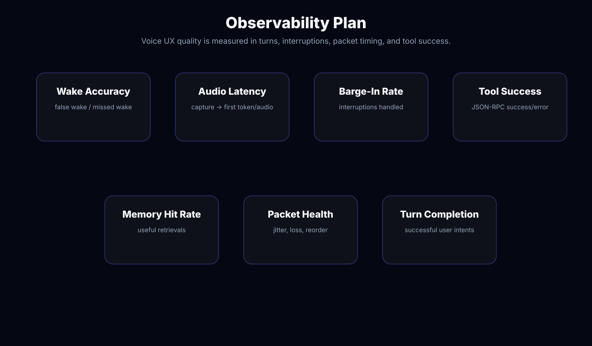
Replace placeholders with real hardware photos and Playwright/server screenshots: ESP32 device, WebSocket logs, MCP tool list, memory retrieval, reminder creation, and barge-in behavior.

Separating the device protocol, audio transport, AI orchestration, MCP tools, and memory made the system explainable. Each failure domain has a different recovery path.
The next iteration should add richer turn tracing, automated latency benchmarks per stage, tool-level permission prompts, and a memory evaluation harness to detect stale or irrelevant retrievals.
I design the protocol boundaries, backend orchestration, and failure paths that make it reliable.
Discuss your realtime AI system mythonggg@gmail.com